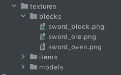
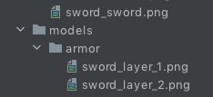

你使用的系统：macOS High Sierra
你使用的JDK：1.8.0_251
你使用的IDE：IntelliJ IDEA
你使用的IDE版本：2020.2
Forge版本: 31.2.0
Minecraft版本：1.15.2
Mapping 文件版本：20200802-1.15.1
{kind=link}

{kind=link}
使用blockbench一个自定义模型的方块，但是模型无法加载，日志里面说好像需要我加一个材质包。。？方块拿在手里的时候可以正常显示材质，但是一旦放置以后，材质与模型都无法显示。
请问是我在blockbench中建模部分出问题了吗
我的json文件是由blockbench自动生成的
他还告诉我我的材质编码格式错误。。
望解答，谢谢
（此方块尚未完成）
[21:07:43] [Server-Worker-3/WARN] [minecraft/ModelBakery]: Exception loading blockstate definition: 'modid:blockstates/sword_oven.json' missing model for variant: 'modid:sword_oven#facing=west'
[21:07:43] [Server-Worker-3/WARN] [minecraft/ModelBakery]: Exception loading blockstate definition: 'modid:blockstates/sword_oven.json' missing model for variant: 'modid:sword_oven#facing=north'
[21:07:43] [Server-Worker-3/WARN] [minecraft/ModelBakery]: Exception loading blockstate definition: 'modid:blockstates/sword_oven.json' missing model for variant: 'modid:sword_oven#facing=south'
[21:07:43] [Server-Worker-3/WARN] [minecraft/ModelBakery]: Exception loading blockstate definition: 'modid:blockstates/sword_oven.json' missing model for variant: 'modid:sword_oven#facing=east'
[21:07:43] [Server-Worker-3/WARN] [minecraft/ModelBakery]: Exception loading blockstate definition: 'modid:blockstates/sword_oven.json' in resourcepack: 'Mod Resources': Non [a-z0-9/._-] character in path of location: modid:block/sword_oven
SwordOven.java
package com.authorname.modname.blocks;
import net.minecraft.block.Block;
import net.minecraft.block.BlockState;
import net.minecraft.block.HorizontalBlock;
import net.minecraft.block.SoundType;
import net.minecraft.block.material.Material;
import net.minecraft.item.BlockItemUseContext;
import net.minecraft.state.DirectionProperty;
import net.minecraft.state.StateContainer;
import net.minecraft.util.Mirror;
import net.minecraft.util.Rotation;
import net.minecraftforge.common.ToolType;
import javax.annotation.Nullable;
public class SwordOven extends Block
{
private static final DirectionProperty FACING = HorizontalBlock.HORIZONTAL_FACING;
public SwordOven()
{
super(Block.Properties.create(Material.IRON)
.hardnessAndResistance(3.5F, 4.0F)
.sound(SoundType.ANVIL)
.harvestLevel(0)
.harvestTool(ToolType.PICKAXE));
}
@Nullable
@Override
public BlockState getStateForPlacement(BlockItemUseContext context) {
return this.getDefaultState().with(FACING, context.getPlacementHorizontalFacing().getOpposite());
}
@Override
public BlockState rotate(BlockState state, Rotation rot) {
return state.with(FACING, rot.rotate(state.get(FACING)));
}
@Override
public BlockState mirror(BlockState state, Mirror mirrorIn) {
return state.rotate(mirrorIn.toRotation(state.get(FACING)));
}
@Override
protected void fillStateContainer(StateContainer.Builder<Block, BlockState> builder) {
builder.add(FACING);
}
}
ModBlocks.java
package com.authorname.modname.init;
import com.authorname.modname.blocks.SwordBlock;
import com.authorname.modname.blocks.SwordOre;
import com.authorname.modname.blocks.SwordOven;
import com.authorname.modname.modname;
import net.minecraft.block.Block;
import net.minecraftforge.fml.RegistryObject;
import net.minecraftforge.registries.DeferredRegister;
import net.minecraftforge.registries.ForgeRegistries;
public class ModBlocks
{
public static final DeferredRegister<Block> BLOCKS = new DeferredRegister<>(ForgeRegistries.BLOCKS, modname.MOD_ID);
//Blocks
public static final RegistryObject<Block> SWORD_BLOCK = BLOCKS.register("sword_block", SwordBlock::new);
public static final RegistryObject<Block> SWORD_ORE =BLOCKS.register("sword_ore", SwordOre::new);
public static final RegistryObject<Block> SWORD_OVEN =BLOCKS.register("sword_oven", SwordOven::new);
}
ModItems.java
package com.authorname.modname.init;
import com.authorname.modname.blocks.BlockItemBase;
import com.authorname.modname.items.HealthBoostApple;
import com.authorname.modname.items.ItemBase;
import com.authorname.modname.modname;
import com.authorname.modname.utility.enums.ModnameArmorMaterial;
import com.authorname.modname.utility.enums.ModnameItemTier;
import net.minecraft.inventory.EquipmentSlotType;
import net.minecraft.item.*;
import net.minecraftforge.fml.RegistryObject;
import net.minecraftforge.registries.DeferredRegister;
import net.minecraftforge.registries.ForgeRegistries;
public class ModItems
{
public static final DeferredRegister<Item> ITEMS = new DeferredRegister<>(ForgeRegistries.ITEMS, modname.MOD_ID);
public static final RegistryObject<Item> SWORD_OVEN_ITEM = ITEMS.register("sword_oven",
() -> new BlockItemBase(ModBlocks.SWORD_OVEN.get()));
}
blockstates/sword_oven.json
{
"variants": {
"facing=north": { "model": "modid:block/sword_oven" },
"facing=south": { "model": "modid:block/sword_oven", "y": 180},
"facing=west": { "model": "modid:block/sword_oven", "y": 270},
"facing=east": { "model": "modid:block/sword_oven ", "y": 90}
}
}
models/block/sword_oven.json
{
"credit": "Made with Blockbench",
"textures": {
"0": "modid:blocks/sword_oven",
"particle": "modid:blocks/sword_oven"
},
"elements": [
{
"from": [0, 0, 0],
"to": [16, 13, 16],
"faces": {
"west": {"uv": [0, 0, 16, 13], "texture": "#0"},
"north": {"uv": [0, 0, 16, 13], "texture": "#0"},
"south": {"uv": [0, 0, 16, 13], "texture": "#0"},
"east": {"uv": [0, 0, 16, 13], "texture": "#0"},
"up": {"uv": [0, 0, 16, 16], "texture": "#0"},
"down": {"uv": [0, 0, 16, 16], "texture": "#0"}
}
}
],
"display": {
"thirdperson_righthand": {
"scale": [0.3, 0.3, 0.3]
},
"thirdperson_lefthand": {
"scale": [0.3, 0.3, 0.3]
},
"firstperson_righthand": {
"scale": [0.5, 0.5, 0.5]
},
"firstperson_lefthand": {
"scale": [0.5, 0.5, 0.5]
},
"ground": {
"scale": [0.3, 0.3, 0.3]
},
"gui": {
"rotation": [21, -32.25, 0],
"translation": [0, 1, 0],
"scale": [0.5, 0.5, 0.5]
}
}
}
models/item/sword_oven.json
{
"parent": "modid:block/sword_oven"
}
抱歉代码有一点多。。
我把所有关于这个方块的代码都放上来了。。

{kind=link}